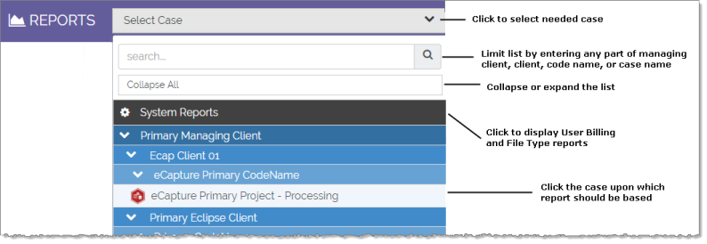
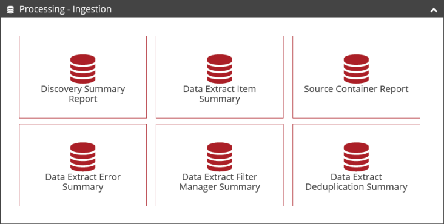

On the Reports page, click the case for which the report is needed.
-
The case-selection menu (shown in the following figure) is organized by Managing Client/Client/Code Name/Case, similar to the organization on the Case Management page.
-
If you select System Reports, the types of reports applicable (Billing and Media) display. See
-
After you select a case, the types of reports applicable to the case type (Review or Processing) display. If custom reports exist at your site, they are also listed.

Click the needed report. For example, if you selected a Processing case in the previous step, click one of the following standard reports:

|
|
Tip: Review reports are listed in different sections, such as the Analytics section. Each section can be collapsed (click ) or expanded (click ) to help you find the needed report. |

A default
preview report image appears for standard reports (excluding custom reports)
such as a pie chart. For information on customizing this area, see
-
Complete the report definition by selecting the needed options. These options vary by report type. See the specific report topic for more information.
-
When the report is defined as needed, click Run Report. Wait as the report is generated; it displays in a separate window. If multiple reports are run, each opens in a separate window.